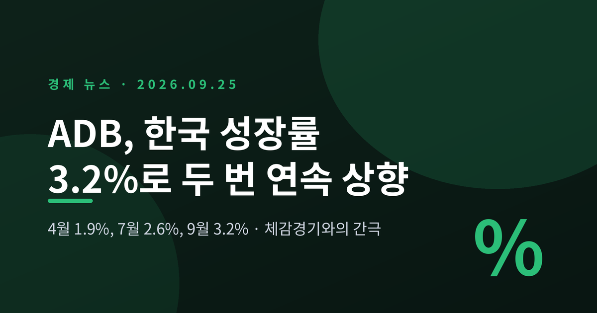
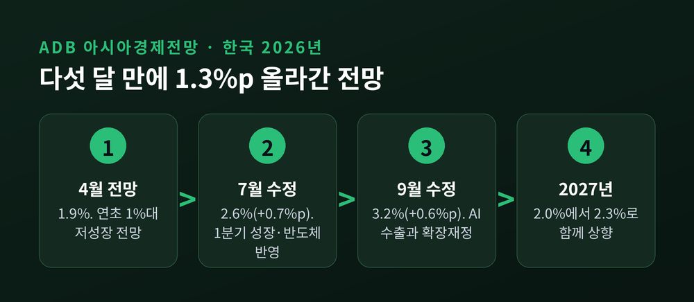
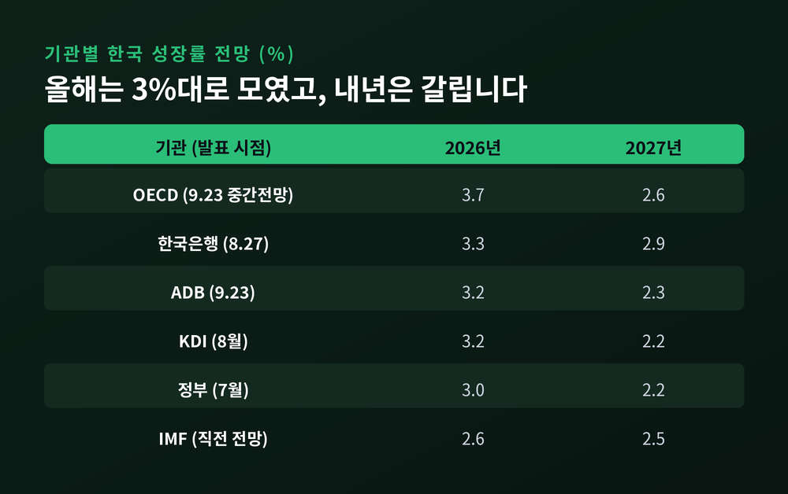
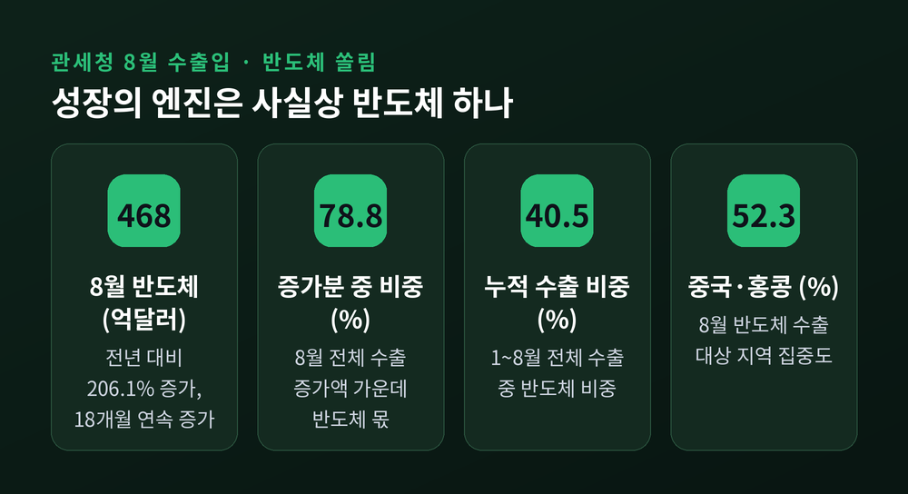
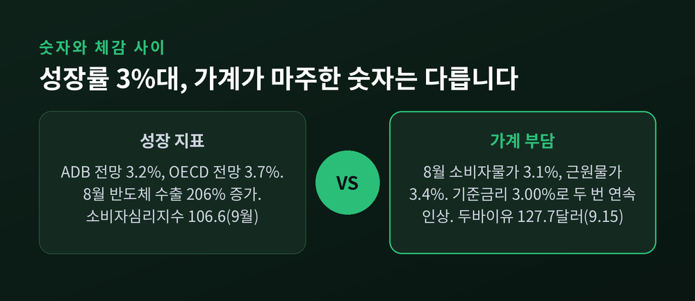
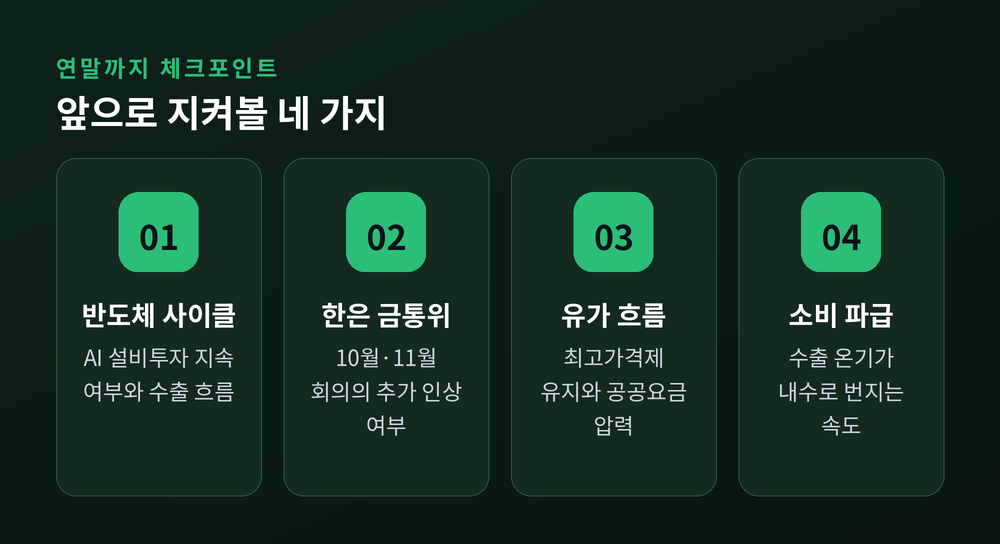

아시아개발은행(ADB)이 9월 23일 올해 한국 성장률 전망을 3.2%로 올렸습니다. 다섯 달 전만 해도 1%대였던 숫자입니다. 이번 글에서는 ADB가 무엇을 근거로 전망을 바꿨는지, 그리고 이 숫자가 우리가 느끼는 경기와 왜 다르게 읽히는지 정리해 보겠습니다.
세 줄 요약
- ADB는 한국의 2026년 성장률 전망을 2.6%에서 3.2%로, 2027년은 2.0%에서 2.3%로 올렸습니다. 4월 1.9% 이후 두 번 연속 상향입니다.
- 근거는 AI 반도체 수출, 확장재정, 기업 실적입니다. 같은 날 OECD는 한층 높은 3.7%를 내놓았습니다.
- 다만 8월 물가 3.1%, 기준금리 3%, 두바이유 120달러대가 겹쳐 있고, 수출 증가분의 70% 이상이 반도체 한 품목에서 나왔습니다. 숫자와 체감 사이의 간극이 이 대목에서 생깁니다.
무슨 일인가 — 다섯 달 만에 1.3%p 올린 전망
ADB는 매년 4월 아시아경제전망(ADO)을 내고, 7월과 9월에 이를 고쳐 씁니다. 올해 한국에 대한 숫자는 그 수정 폭이 유난히 컸습니다.
4월에는 1.9%였습니다. 7월에 2.6%로 0.7%p를 올렸습니다. 이번 9월에는 다시 0.6%p를 더해 3.2%가 됐습니다. 다섯 달 사이 1.3%p가 오른 셈입니다.
내년 전망도 함께 움직였습니다. 2027년 성장률은 7월 2.0%에서 2.3%로 높아졌습니다.
ADB는 7~8월 제조업 구매관리자지수(PMI)와 기업심리지수(BSI)가 견조했다는 점을 먼저 짚었습니다. 여기에 글로벌 AI 반도체 수요로 수출이 늘고, 확장적 재정정책과 건설투자 회복이 내수를 완만하게 끌어올릴 것으로 봤습니다.
물가 전망은 손대지 않았습니다. 올해 2.7%, 내년 2.2%로 7월과 같습니다. 에너지 가격과 수요 확대가 물가를 밀어 올리지만, 정부의 물가 안정 조치가 일부를 상쇄한다는 설명입니다.
지역 전체로 보면 아시아·태평양 개발도상국 성장률은 5.0%로 0.1%p 올랐습니다. 이번 보고서의 부제는 '장기화하는 에너지 충격과 엘니뇨'입니다. 좋은 소식과 경고가 한 보고서에 나란히 담겨 있다는 뜻입니다.

왜 중요한가 — 기관 전망이 3%대로 모였습니다
ADB 한 곳의 숫자만 보면 큰 의미를 두기 어렵습니다. 눈여겨볼 점은 국내외 기관들이 비슷한 시기에 일제히 3%대로 올라섰다는 사실입니다.
한국은행은 8월 27일 올해 전망을 2.6%에서 3.3%로 올렸습니다. KDI는 8월에 2.5%에서 3.2%로, 정부는 7월에 3.0%로 높였습니다.
그리고 ADB 발표 당일 저녁, OECD가 9월 중간 경제전망을 냈습니다. 한국의 올해 성장률은 6월 2.6%에서 3.7%로 1.1%p 뛰었습니다. G20 가운데 가장 큰 상향 폭입니다. 1%p 넘게 올린 나라는 한국뿐이었습니다.
예전엔 "1%대 저성장이 굳어진다"는 말이 흔했습니다. 지금은 3%대가 기본값처럼 이야기됩니다. 지난해 성장률이 1.1%였다는 점을 떠올리면 분위기가 크게 바뀐 셈입니다.
내년으로 넘어가면 기관별 차이가 벌어집니다. 한은은 2.9%로 가장 높고, OECD 2.6%, IMF 2.5%, ADB 2.3%, KDI와 정부가 각각 2.2%입니다. 올해의 호황이 내년에도 이어질지에 대해서는 판단이 갈린다는 뜻입니다.

배경 — 성장의 엔진은 사실상 반도체 하나입니다
숫자를 끌어올린 힘이 어디서 왔는지 보면 이번 상향의 성격이 분명해집니다.
8월 반도체 수출은 468억3000만달러였습니다. 1년 전 152억9900만달러의 세 배 수준으로, 206.1% 늘었습니다. 3개월 연속 400억달러를 넘겼고, 18개월 연속 증가입니다.
같은 달 전체 수출은 982억8200만달러로 68.7% 늘었습니다. 그런데 늘어난 400억달러 가운데 315억달러, 즉 78.8%가 반도체 몫이었습니다. 1~8월 누적으로 넓혀도 반도체 비중은 40.5%, 수출 증가분의 73.7%가 반도체에서 나왔습니다.
반대편 풍경은 다릅니다. 8월 승용차 수출은 30.1%, 선박은 45.2% 줄었습니다. 반도체 수출처도 중국과 홍콩이 52.3%를 차지합니다. 품목과 지역이 동시에 한쪽으로 쏠려 있는 구조입니다.
OECD의 설명은 이 점을 더 선명하게 드러냅니다. 올해 한국의 강한 성장을 산업생산과 수출로 설명하면서 민간소비는 언급하지 않았습니다. 내년 둔화의 원인으로는 "민간소비 증가세가 더 완만해지는 영향"을 들었습니다. 수출의 온기가 소비로 넓게 번지지 못한다는 진단입니다.

쟁점 — 성장률 3%와 체감경기 사이의 간극
성장률이 오르면 살림살이도 나아져야 할 것 같습니다. 그러나 지금 가계가 마주한 숫자들은 방향이 조금 다릅니다.
첫째는 물가입니다. 8월 소비자물가는 3.1% 올라 한 달 만에 다시 3%대로 돌아왔습니다. 식료품과 에너지를 뺀 근원물가는 3.4%로, 2023년 5월 이후 가장 높습니다. 휴대전화료가 26.7%, 보험서비스료가 13.4% 올랐습니다. ADB가 유지한 연간 2.7%보다 실제 월별 수치가 높게 나오고 있습니다.
둘째는 금리입니다. 한국은행은 8월 27일 기준금리를 2.75%에서 3.00%로 올렸습니다. 7월에 이은 두 번 연속 인상입니다. 신현송 총재를 포함한 6명이 찬성했고, 황건일 위원이 동결 의견을 냈습니다. 금통위원들이 찍은 6개월 뒤 금리 전망은 3.25%에 가장 많이 몰렸습니다. OECD도 한국을 가까운 시일 안에 추가 인상이 예상되는 나라로 분류했습니다.
셋째는 유가입니다. 사우디 동서 송유관이 9월 10일 드론 공격으로 멈췄고, 리비아 유전 3곳도 가동을 중단했습니다. 6월 종전 양해각서 뒤 63달러대까지 내렸던 두바이유가 9월 15일 127.7달러까지 올랐습니다. 정부는 석유 최고가격제로 휘발유 값을 ℓ당 1850원대에 묶고 있습니다. 해제되면 2000원대로 돌아갈 수 있다는 우려가 나옵니다.
체감의 온도차는 이 세 가지가 한꺼번에 겹친 데서 생깁니다. 파이낸셜뉴스가 5대 금융지주 연구소를 설문한 결과가 이를 잘 보여줍니다. 한 금융권 관계자는 성장과 소득 개선은 일부에 집중되지만 금리 인상은 "경제 전반에 적용된다"고 말했습니다. 반도체는 설비가 큰 자본집약 산업이라 고용과 내수로 번지는 힘이 약하다는 지적도 덧붙였습니다.
물론 긍정적인 신호도 있습니다. 9월 소비자심리지수는 106.6으로 한 달 만에 2.1p 올랐습니다. 다만 여섯 개 구성 지수 가운데 '현재생활형편'만 오르지 못했습니다. 앞날은 낙관하지만 지금의 형편은 그대로라는 응답입니다. 체감 괴리가 한 줄로 드러난 대목입니다.

전망 — 앞으로 지켜볼 네 가지
ADB 스스로도 위험 요인을 분명히 적었습니다. 지정학적 긴장, 글로벌 금융시장 변동성, 미국의 추가 관세입니다. 여기에 국내 변수를 더해 보면 점검할 지점은 네 가지로 좁혀집니다.
- 반도체 사이클의 지속성: 하이퍼스케일러의 AI 설비투자가 이어지는 동안은 수출이 버팀목이 됩니다. 반대로 AI 투자 속도가 꺾이면 성장률을 떠받치던 기둥도 함께 흔들립니다. OECD는 이미 한국 증시에서 반도체주의 뚜렷한 조정이 있었다고 짚었습니다.
- 한은의 다음 결정: 올해 남은 금통위는 10월 22일과 11월 26일입니다. 추가 인상이 나오면 변동금리와 혼합형 주담대 차주의 부담이 더 커집니다.
- 유가와 최고가격제: 홍해 상황이 악화되면 11차 석유 최고가격에 인상 압력이 커집니다. LNG 가격이 시차를 두고 반영되면 전기·난방요금으로 번질 수도 있습니다.
- 소비로의 파급: ADB는 확장재정과 기업 실적이 민간소비를 점차 살릴 것으로 봅니다. OECD와 KDI는 그 속도가 더딜 것으로 봅니다. 연말 소비 지표가 어느 쪽 손을 들어줄지 지켜볼 만합니다.

정리하면 이렇습니다.
ADB의 3.2%는 틀린 숫자가 아닙니다. 수출과 생산이 실제로 강합니다. 다만 그 힘이 반도체라는 한 줄기에 기대고 있고, 물가와 금리와 유가는 모든 가계에 고르게 부담을 지웁니다. 두 번 연속 올라간 전망치가 곧바로 살림살이의 개선을 뜻하지는 않습니다.
"성장률은 평균을 말하고, 체감은 분포를 말합니다."
내년 이맘때 이 간극이 좁혀져 있을지 물으신다면, 그 답은 반도체 바깥의 산업과 가계 소비가 얼마나 따라붙느냐에 달려 있다고 말씀드리겠습니다.
이 글은 공개된 기관 발표와 언론 보도를 바탕으로 경제 흐름을 해설한 것으로, 특정 자산의 매매나 투자를 권유하지 않습니다. 투자 판단과 그 결과의 책임은 투자자 본인에게 있습니다.
참고 자료: 아시아개발은행(ADB) 2026년 9월 아시아경제전망, 헤럴드경제·Korea JoongAng Daily(9.23), 아이뉴스24(9.23, OECD 중간전망), 한국금융신문(8.27, 한은 금통위), 서울신문(9.2 물가, 9.17 유가), 데이터뉴스(9.15, 관세청 8월 수출입), 파이낸셜뉴스(9.17), 녹색경제신문(9.22, 소비자심리)